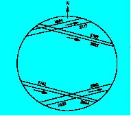

mardi 8 juin 2004
Alors que le passage ou ‘transit’ de Mercure devant le Soleil se reproduit 13 à 14 fois par siècle, celui de Vénus possède une fréquence rarissime. Dans les deux cas, il s’agit d’une minuscule éclipse, où la planète masque une part infime, de la surface de l’astre du jour. L’occasion nous en sera offerte, le mardi 8 juin 2004 entre 7 h 20 et 13 h 24 selon l’heure légale d’été soit ( TU + 2 h ) . Les lois de la mécanique céleste reproduisent ces rencontres tous les 105,5 ans et 8 ans, puis 121,5 ans et 8 ans. Ensuite on reprend cette pseudo périodicité, qui au total sur 243 ans, conduit à des passages presque similaires.. ce qui représente la vraie périodicité du phénomène. Ce prochain passage, suit celui du 6 décembre 1882 et précède du celui 6 juin 2012 dont la France ne verra que la fin au petit matin…. C’est donc l’occasion d’observer un phénomène rare, qui depuis le 18 ème siècle a donné lieu à des expéditions lointaines et parfois périlleuses.
En effet dès 1691, E. Halley, décrit une méthode nouvelle, de mesure de la distance de la Terre au Soleil. Elle s’appuie sur le chronométrage de la durée totale du passage de Vénus devant notre étoile , pour des observateurs aussi éloignés que possible, sur le globe terrestre. ( Voir schéma ci dessous de P. Causeret, et documents sur le site du CLEA cité en référence). Ainsi les passages de 1761 et 1769 puis 1874 et 1882, ont conduit des astronomes de part le monde, au service de cette méthode. La distance Terre-Soleil étant connue, celle des autres planètes l’est aussi grâce à la troisième loi de Képler…
© CLEA
Observer le passage de Mercure ou de Vénus devant le Soleil, c’est d’abord observer le Soleil, avec toutes les précautions visuelles qui s’imposent, avec ou sans instrument. Se reporter aux textes officiels parus lors de l’éclipse totale de Soleil de 1999 : http://www.sante.gouv.fr/htm/actu/34_990407.htm RAPPEL: il faut S’INTERDIRE les minuscules filtres, notés (SUN), qui sont généralement vendus avec les petits appareils du commerce et que l’on visse sur les oculaires. Placés tout près de l’image solaire que donne l’objectif, ils risquent d’éclater subitement en exposant l’œil à de graves brûlures rétiniennes irréversibles et ceci sans la moindre sensation de douleur!.
-Une matinée à ne pas manquer sur un horizon Est dégagé. ( s’il fait beau )
-En heure légale d’été soit le Temps Universel + 2 heures, des figures 2 et 3. L’entrée de 1 à 2, demande près de 20 minutes ; idem pour la sortie de 3 à 4. (voir figure 1)
-Fig.1,2,3, Astronomie hors série 2003, SAF, 3 rue Beethoven, 75016 Paris
*Le ‘Solarscope ‘est en vente chez la plupart des revendeurs de matériel astronomique. Site du CLEA : www.ac-nice.fr/clea et site BDL : http://clea-astro.eu/clea/aLaUne/smart
**Vesta pro ou Toucam pro de chez Philips
Roger Marical - Observatoire de Rouen – Professeur Ressource -